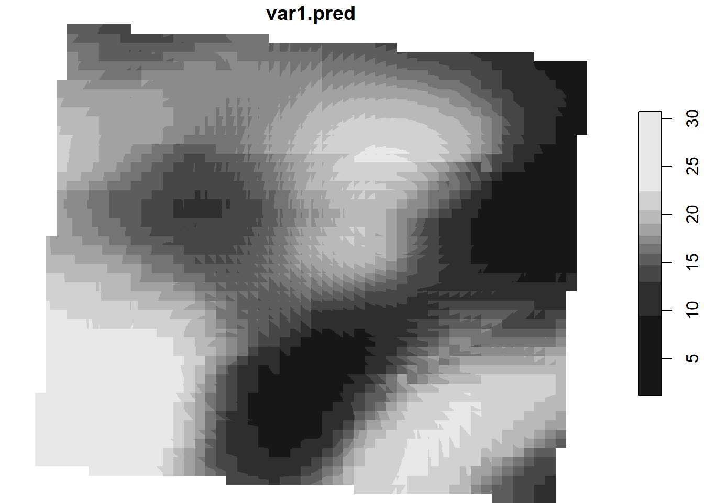
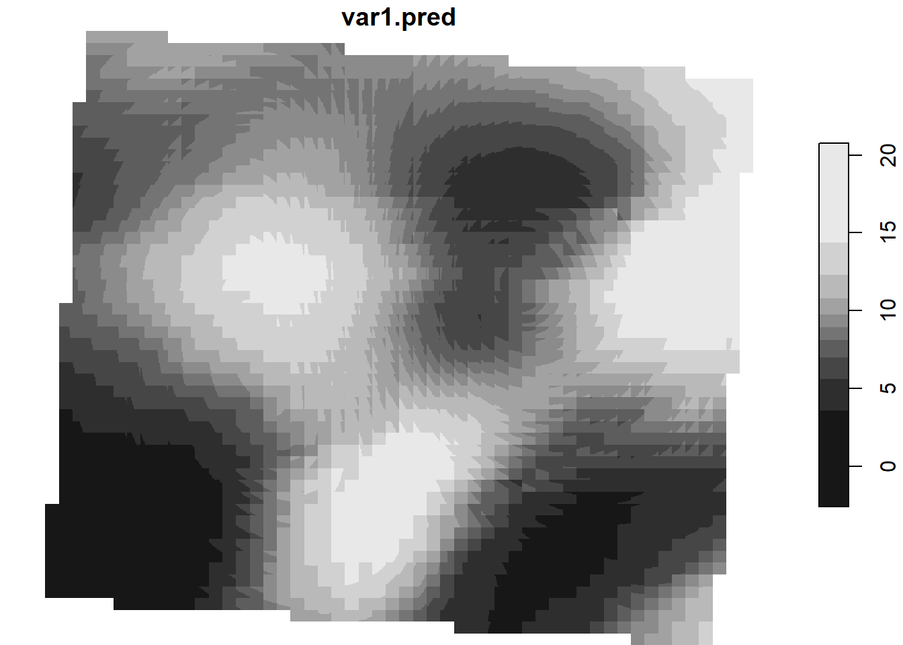

The use of quantitative methods, especially statistical methods, is of considerable importance for describing and explaining spatial patterns (e.g. landscape ecology). The central concept on which these methods are based is that of proximity, or location in relation to each other.
Distance and data representation
Let’s take a closer look at proximity, which is mentioned frequently. What exactly is it? How can proximity/neighborliness be expressed in such a way that the space becomes meaningful?
In general, spatial relationships are described in terms of neighborhoods (positional) and distances (metric). In spatial analysis or prediction, however, it is important to be able to name the spatial influence, i.e. the evaluation or weighting of this relationship, either qualitatively or quantitatively. Tobler did this for a specific objective by stating that “near” is more important than “far”. But what about in other cases? The challenge is that spatial influence can only be measured directly in exceptional cases. There are many ways to estimate it, however.
Neighborhood
Neighborhood is perhaps the most important concept. Higher dimensional geo-objects can be considered neighboring if they touch each other, e.g. neighboring countries. For zero-dimensional objects (points), the most common approach is to use distance in combination with a number of points to determine neighborhood.
Distance
Proximity or neighborhood analyses are often concerned with areas of influence or catchment areas, i.e. spatial patterns of effects or processes.
This section discusses some methods for calculating distances between spatial objects. Because of the different ways of discretizing space, we must make the – already familiar – distinction between vector and raster data models.
Initially, it is often useful to work without spatially restrictive conditions in a first analysis, e.g. when this information is missing. The term “proximity” inherently implies a certain imprecision. Qualitative terms that can be used for this are: “near”, “far” or “in the neighborhood of”. Representation and data-driven analysis require these terms to be objectified and operationalized. So, this metric must be based on a distance concept, e.g. Euclidean distance or travel times. In a second interpretative step, we must decide which units define this type of proximity. In terms of the objective of a question, there are only suitable and less-suitable measures; there is no correct or incorrect. Therefore, it is critical to define a meaningful neighborhood relationship for the objects under investigation.
Filling spatial gaps
Now that we have learned the basic concepts of distance, neighborhood and filling spatial gaps, let’s take a look at interpolating or predicting values in space.
For many decades, deterministic interpolation techniques (inverse distance weighting, nearest neighbor, kriging) have been the most popular spatial interpolation techniques. External drift kriging and regression kriging, in particular, are fundamental techniques that use spatial autocorrelation and covariate information, i.e. sophisticated regression statistics.
Machine learning algorithms like random forest have become very popular for spatial environmental prediction. One major reason for this is that they are can take into account non-linear and complex relationships, i.e. compensate for certain disadvantages that are present in the usual regression methods.
Proximity concepts
Voronoi polygons – dividing space geometrically
Voronoi polygons (aka Thiessen polygons) are an elementary method for geometrically determining proximity or neighborhoods. Voronoi polygons (see figure below) divide an area into regions that are closest to a given point in a set of irregularly distributed points. In two dimensions, a Voronoi polygon encompasses an area around a point, such that every spatial point within the Voronoi polygon is closer to this point than to any other point in the set. Such constructs can also be formed in higher dimensions, giving rise to Voronoi polyhedra.
The blue dots are a typical example of irregularly distributed points in space – in this case, rain gauges in Switzerland. The overlaid polygons are the corresponding Voronoi segments that define the corresponding closest geometrical areas (gisma 2021)”
Since Voronoi polygons correspond to an organizational principle frequently observed in both nature (e.g. plant cells) and in the spatial sciences (e.g. central places , according to Christaller), there are manifold possible applications. Two things must be assumed, however: First, that nothing else is known about the space between the sampled locations and, second, that the boundary line between two samples is incomplete idea.
Voronoi polygons can also be used to delineate catchment areas of shops, service facilities or wells, like in the example of the Soho cholera outbreak. Please note that within a polygon, one of the spatial features is isomorphic, i.e. the spatial features are identical.
But what if we know more about the spatial relationships of the features? Let’s have a look at some crucial concepts.
Spatial interpolation of data
Spatially interpolating data points provides us with a modeled quasi-continuous estimation of features under the corresponding assumptions. But what is spatial interpolation? Essentially, this means using known values to calculate neighboring values that are unknown. Most of these techniques are among the most complex methods of spatial analysis, so we will deliberately limit ourselves here to a basic overview of the methods. Some of the best-known and common interpolation methods found in spatial sciences are nearest neighborinverse distance, spline interpolations, kriging, and regression methods.
Continously filling the gaps by interpolation
To get started, take a look at the following figure, which shows six different interpolation methods to derive the spatial distribution of precipitation in Switzerland (in addition to the overlaid Voronoi tessellation).
The blue dots are a typical example of irregularly distributed points in space – in this case, rain gauges in Switzerland. The size of each dot corresponds to the amount of precipitation in mm. The overlaid polygons are the corresponding Voronoi segments that define the corresponding closest geometrical areas (gisma 2021)” top left: Nearest neighbor interpolation based on 3-5 nearest neighbors, top right: Inverse Distance weighting (IDW) interpolation method middle left: AutoKriging with no additional parameters, middle right: Thin plate spline regression interpolation method bottom left: Triangular irregular net (TIN) surface interpolation, bottom right: additive model (GAM) interpolation
In the example of precipitation in Switzerland, the positions of the weather stations are fixed and cannot be freely chosen.
When choosing an appropriate interpolation method, we need to pay attention to several properties of the samples (distribution and properties of the measurement points):
Representativeness of measurement points: The sample should represent the phenomenon being analyzed in all of its manifestations.
Homogeneity of measurement points: The spatial interdependence of the data is a very important basic requirement for further meaningful analysis.
Spatial distribution of measurement points: The spatial distribution is of great importance. It can be completely random, regular or clustered.
Number of measurement points: The number of measurement points depends on the phenomenon and the area. In most cases, the choice of sample size is subject to practical limitations.
What makes things even more complex is that these four factors – representativeness, homogeneity, spatial distribution and size – are all interrelated. For example, a sample size of 5 measuring stations for estimating precipitation for all of Switzerland is hardly meaningful and therefore not representative. Equally unrepresentative would be selecting every measuring station in German-speaking Switzerland to estimate precipitation for the entire country. In this case, the number alone might be sufficient, but the spatial distribution would not be. If we select every station at an altitude below 750 m asl, the sample could be correct in terms of both size and spatial distribution, but the phenomenon is not homogeneously represented in the sample. An estimate based on this sample would be clearly distorted, especially in areas above 750 m asl. In practice, virtually every natural spatially-continuous phenomenon is governed by stochastic fluctuations, so, mathematically speaking, it can only be described in approximate terms.
Machine learning
Machine learning (ML) methods such as random forest can also produce spatial and temporal predictions (i.e. produce maps from point observations). These methods are particularly robust because they take spatial autocorrelation into account, which can improve predictions or interpolations by adding geographic distances. This ultimately leads to better maps with much more complex relationships and dependencies.
In the simplest case, the results are comparable to the well-known model-based geostatistics. The advantage of ML methods over model-based geostatistics, however, is that they make fewer assumptions, can take non-linearities into account and are easier to automate.
The original dataset (top left) is a terrain model reduced to 8 meters with 48384 single pixels. For interpolation, 1448 points were randomly drawn and interpolated with conventional kriging (top right), support vector machines (SVM) (middle left), neural networks (middle right), and two variants of random forest (bottom row). In each method, only the distance of the drawn points is used as a dependency.
Each interpolation method was applied using the “default” settings. Tuning could possibly lead to significant changes in all of them. Fascinatingly, the error measures correlate to the visual results: Kriging and the neural network show the best performance, followed by the random forest models and the support-vector machine.
model
total_error
mean_error
sd_error
Kriging
15797773.0
54.2
67.9
Neural Network
19772241.0
67.8
80.5
Random Forest
20540628.1
70.4
82.5
Normalized Random Forest
20597969.8
70.6
82.7
Support Vector Machine
21152987.7
72.5
68.3
Additional references
Get the Most Out of AI, Machine Learning, and Deep Learning Part 1 (10:52) and Part 2 (13:18)
Please download the data from the repository or take the USB-stick
#------------------------------------------------------------------------------# Type: control script # Author: Chris Reudenbach, creuden@gmail.com# Description: interpolates the air temp# Copyright:GPL (>= 3) # Date: 2023-08-28 # V-2023-08-28 ; #------------------------------------------------------------------------------# 0 - project s# basic packageslibrary("mapview")library("raster")library("terra")library("sf")library("dplyr")library("lwgeom")library("readxl")library("highfrequency")library("tidyverse")library("rprojroot")library("xts")library("sp")# get the current folder as working dircetoryroot_folder =find_rstudio_root_file()# define time period to aggregate temp datatime_period =3# names of data filesfnDTM ="copernicus_DEM.tif"fn_dataFC29 ="all_GW1000A-WIFIFC29(202308270000-202308292319).xlsx"fn_dataDB2F ="all_GW1000A-WIFIDB2F(202308270000-202308292219).xlsx"fn_pos_data="stations_prelim.shp"fn_area ="plot.shp"# # read DTMDTM = terra::rast(fnDTM)DTM=disagg(DTM, fact=c(15, 15))# # cast to SpatialPixelsDataFrameDTM.spdf <-as(raster(DTM),'SpatialPixelsDataFrame')colnames(DTM.spdf@data) <-"altitude"crs = raster::crs("+proj=utm +zone=33 +datum=WGS84 +units=m +no_defs ")crs(DTM.spdf)=crs# read station position data pos=st_read(fn_pos_data)
Reading layer `stations_prelim' from data source
`/home/creu/edu/summerschool2023/EON2023/mc_session/stations_prelim.shp'
using driver `ESRI Shapefile'
Simple feature collection with 14 features and 1 field
Geometry type: POINT
Dimension: XY
Bounding box: xmin: 183055.8 ymin: 5748366 xmax: 183170.3 ymax: 5748499
Projected CRS: WGS 84 / UTM zone 33N
# read station position dataarea=st_read(fn_area)
Reading layer `plot' from data source
`/home/creu/edu/summerschool2023/EON2023/mc_session/plot.shp'
using driver `ESRI Shapefile'
Simple feature collection with 1 feature and 1 field
Geometry type: POLYGON
Dimension: XY
Bounding box: xmin: 10.40154 ymin: 51.79506 xmax: 10.40658 ymax: 51.79803
Geodetic CRS: WGS 84
area=st_transform(area,crs)
Cleaning data
We need to do an ugly cleaning job. This is basically the most cumbersome part of dealing with data analysis.
# merge positions and values via idm=merge(pos,temp_fin)# make the var name working for gstatn=gsub(x =names(m),pattern ="-",replacement ="")n=gsub(x = n,pattern =" ",replacement ="")n=gsub(x = n,pattern =":",replacement ="")n=gsub(x = n,pattern ="2023",replacement ="A2023")# rename colnamesnames(m)=n# grep the varnamesvars=grep(glob2rx("A2023*"), n, value =TRUE)# convert data to terra vector formattemperature_vect =vect(m)temperature_vect
# create template rasterr=DTM *0# create table to interpolatexyz=cbind(geom(temperature_vect)[,3],geom(temperature_vect)[,4],as.numeric(temperature_vect$A20230829220000))xy=cbind(geom(temperature_vect)[,3],geom(temperature_vect)[,4])z=as.numeric(temperature_vect$A20230829220000)# convert to data frame and name headerxyz=data.frame(xyz)names(xyz) =c("x","y","temp")xyz
## universal kriging with gstat # we use the terrain model for prediction# convert to sp due to gstatm2 =as(m,"Spatial") # for all time slotsfor (var in vars[5:8]){# autofit variogramm for kriging vm.auto = automap::autofitVariogram(formula =as.formula(paste("altitude", "~ 1")),input_data = m2)plot(vm.auto)# # kriging print(paste0("kriging ", var)) var.pred <- gstat::krige(formula =as.formula(paste0(var, "~altitude")),locations = m2,newdata = DTM.spdf,model = vm.auto$var_model,debug.level=0,) r=rasterFromXYZ(as.data.frame(var.pred)[, c("x", "y", "var1.pred")])# # reclassify erratic values reclass_df <-c(-Inf, 0, NA)# reshape the object into a matrix with columns and rows reclass_m <-matrix(reclass_df,ncol =3,byrow =TRUE) r_c <-reclassify(r,reclass_m)plot(r_c)# re assign crs#crs(r_c) = crs(paste0("EPSG:32633")) raster::writeRaster(r_c,paste0(var,"v_interpol.tif"),overwrite=TRUE)}
[1] "kriging A20230829110000"

[1] "kriging A20230829140000"

[1] "kriging A20230829170000"
[1] "kriging A20230829200000"
FurtherHands on examples
The Forgenius Pinus Pinaster Project provides an fully integrated GIS source code and field data dealing with prediction classificaten of UAV and station realted data.